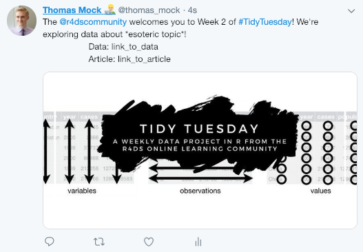
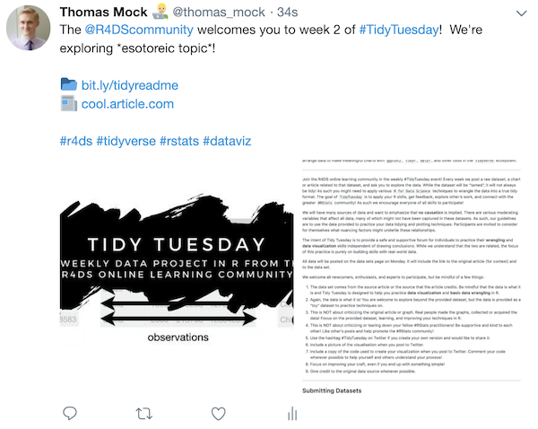

One of my #rstats goals for 2019 was to make #TidyTuesday better, both from the experience on GitHub and the weekly posting for myself and for others.
The first thing I did for the project was to re-organize the GitHub repo, moving all the 2018 data into an archived folder and making a new 2019 folder to begin populating with new data! Additionally, with some help from Philip Khor via a pull-request - the GitHub repo is now full of relative (rather than absolute) paths to make life easier for anyone that forks the repo.
I reorganized the Useful Links section at the bottom of the repo to make it more succinct, adding a few more links including Happy Git with R by Jenny Bryan! If you are just getting started with GitHub and want to learn more about Git, GitHub, and using it from within RStudio - check out her resources!
Ways to contribute
I’m always on the lookout for interesting datasets, and a way for you to contribute to TidyTuesday beyond a weekly post is submitting a dataset you find in the wild as an Issue on the TidyTuesday repo. Please link to the dataset and add any additional info as to why you thought it was interesting or an article/plot that corresponds to that data.
I added the Submitting Code Chunks section directly to the readme doc. This is for some code, script, etc that you found useful when working with TidyTuesday. It’s also a chance for a low-stress pull-request as that’s how we will be adding code chunks! Please see the guide here about the format to submit.
Improving my Weekly Tweet Submission Process
I generally switched between a lot of tabs, eg GitHub, short links, manually adding pics, etc while getting the weekly post setup. I knew there was a way to at least partially automate this, so I looked into my options.
The rtweet package has a post to Twitter function via rtweet::post_tweet() which allows you to programmatically post tweets! However - to get where I wanted to be I had to add a few more things and do some interesting refactoring!
DISCLAIMER
To use rtweet for posting you will need to register a Twitter application - please see Mike Kearney’s great vignette on how to do this.
# Basic method of tweeting from rtweet vignette
post_tweet(status = "my first rtweet #rstats", media = NULL,
token = NULL, in_reply_to_status_id = NULL, destroy_id = NULL,
retweet_id = NULL)My Weekly #TidyTuesday Tweet
If I simply wanted to post a tweet following the format for #TidyTuesday I could do something like the following.
rtweet::post_tweet("The @r4dscommunity welcomes you to Week 2 of #TidyTuesday! We're exploring data about *esoteric topic*!
Data: link_to_data
Article: link_to_article",
media = "tt_logo.png")However this results in the following Tweet:

This is not exactly what I want… the text isn’t aligned properly, I want more than 1 pic, and I really would prefer to use emoji to save characters over Data: and Article:.
So on to the next step!
Hadley Wickham has the emo package which allows you to input various emoji into R/R Markdown. This package perfectly solves our emoji needs! I can use code like emo::ji("folder") to get 📁 or emo::ji("news") to get 📰!
But I still need to get my text aligned properly… So I broke some formatting rules for normal code, but it got the job done for this rtweet use! Basically, I forced the text to be fully left-aligned, added in some spacing where necessary, and used paste0() to get everything squished together in a coherent tweet (with multiple pics!).
rtweet::post_tweet(status = paste0(
"The @R4DScommunity welcomes you to week 2 of #TidyTuesday! We're exploring *esoteric topic*!
",
emo::ji("folder"),
" http://bit.ly/tidyreadme
",
emo::ji("news"),
" http://cool.article.com
#r4ds #tidyverse #rstats #dataviz"),
# The below code is relative to my project
# You need to specify path to the images for tweeting
media = c("tt_logo.png",
"tt_rules.png")
)
This is a great start! However, I want to make this a bit more robust, as I don’t want to edit it all by hand, when I can generate it programmatically. Refactoring code is always an adventure, so let’s take a look at our code to see what is static and what changes.
Mix of static and dynamic:
-
The @r4dscommunity welcomes you to week {week} of #Tidy Tuesday
-
We're exploring {data to explore}!
- The link to the readme is static, but we change the link to an article.
- The logo and rules are always the same, but up to two additional pics are dynamic.
So how do you generate dynamic and static text together? With glue of course! The glue package glues strings together in R, and allows for interpreted strings with the use of {} for example glue::glue("Glue is an {adjective} package!") where the {adjective} indicates an intepreted add-in. So if I had adjective <- "awesome" the string would print as "Glue is an awesome package!".
Since we are going to be linking local pics, I’m also using the here package to make moving between folders in my project easier. My folder is organized like so: TidyTuesday/2019/2019-01-08/.
So I can use here::here("2019", "2019-01-08", "pic1.png") to get the file directory for pic1.png. Since the date 2019-01-08 changes each week, I will also add it as a variable to define.
Anyway, back to refactoring.
# Dynamic Variables
week_num <- 2
exploring <- "Esoteric data!"
short_link <- "http://bit.ly/WHATEVER"
week_date <- "2019-01-08"
# Static framework
rtweet::post_tweet(status = glue::glue(
"The @R4DScommunity welcomes you to week {week_num} of #TidyTuesday! We're exploring {exploring}!
",
emo::ji("folder"),
" http://bit.ly/tidyreadme
",
emo::ji("news"),
" {short_link}
#r4ds #tidyverse #rstats #dataviz"),
# The below code is relative to my project
# You would need to specify path to the images for tweeting
media = c(here::here("static_img", "tt_logo.png"), # I have two static pics
here::here("static_img", "tt_rules.png"), # so they go in /static
here::here("2019", week_date, "pic1.png"), # notice I have week_date
here::here("2019", week_date, "pic2.png") # here instead of 2019-01-01
))Now this will generate the correctly formatted tweet, include the correct additional pictures and text, but more importantly the use of glue and here means I can define the dynamic portions at the top and leave the static body the same.
However, we can refactor things further!
We can refactor to a function AND since I only post these tweets on the Monday before #TidyTuesday, I can build variable dates into the function. Really the only thing I need to manually change is what data we are exploring and the short article link.
Before we get into the function, I am using a number of packages for my ease.
# Only two inputs!
# exploring = what we are exploring in text
# short_link = the article link
post_tidytuesday <- function(exploring, short_link){
# set date for files structure and names
week_date <- as.character(lubridate::today() + 1)
# Today's date + 1 = tomorrow
# Then time diff between tomorrow and 1st tidytuesday in number of weeks
week_num <- as.numeric((lubridate::today() + 1) - lubridate::ymd(20190101))/7 + 1
# post the tweet with fill
rtweet::post_tweet(status = glue::glue(
"The @R4DScommunity welcomes you to week {week_num} of #TidyTuesday! We're exploring {exploring}!
",
emo::ji("folder"),
" http://bit.ly/tidyreadme
",
emo::ji("news"),
" {short_link}
#r4ds #tidyverse #rstats #dataviz"),
# The below code is relative to my project
# You need to specify path to the images for tweeting
media = c(here::here("static_img", "tt_logo.png"),
here::here("static_img", "tt_rules.png"),
here::here("2019", week_date, "pic1.png"),
here::here("2019", week_date, "pic1.png")
))
}Now we have a nice function and when I want to post on Monday morning, I can just do the following!
post_tidytuesday(
exploring = "Esoteric data!",
short_link = "http://bit.ly/tidy_post"
)The link to GitHub for this code.
Package Links
Step 2 (for next time)
How to improve YOUR #TidyTuesday process and get your code directly from RStudio into Carbon.now.sh for pretty “screenshots”!
─ Session info ───────────────────────────────────────────────────────────────
setting value
version R version 4.2.0 (2022-04-22)
os macOS Monterey 12.2.1
system aarch64, darwin20
ui X11
language (EN)
collate en_US.UTF-8
ctype en_US.UTF-8
tz America/Chicago
date 2022-04-28
pandoc 2.18 @ /Applications/RStudio.app/Contents/MacOS/quarto/bin/tools/ (via rmarkdown)
quarto 0.9.294 @ /usr/local/bin/quarto
─ Packages ───────────────────────────────────────────────────────────────────
package * version date (UTC) lib source
sessioninfo * 1.2.2 2021-12-06 [1] CRAN (R 4.2.0)
[1] /Library/Frameworks/R.framework/Versions/4.2-arm64/Resources/library
──────────────────────────────────────────────────────────────────────────────